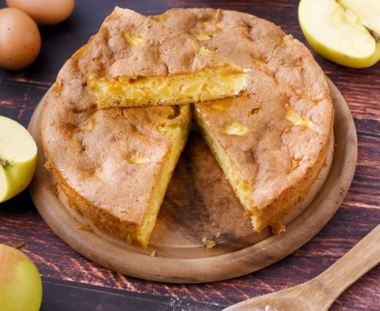

Temps de cuisson : 55 min
Difficulté : Très facile
Préchauffer le four à 160°C (thermostat 5-6).Mélanger tous les ingrédients de la pâte.
Ajouter les pommes préalablement coupées en cube.
Mélanger à nouveau à la spatule.
UVerser la pâte à gâteau dans un moule beurré et cuire pendant 40 à 50 minutes.
Déguster !